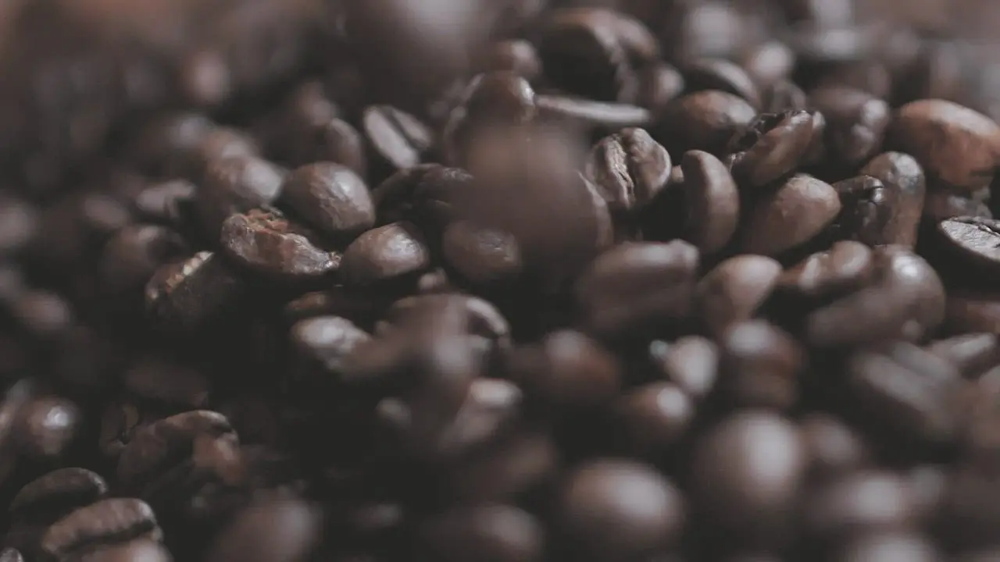
Roast
คั่วเองทุกสัปดาห์ที่โรงคั่วของเรา เลือกโปรไฟล์ให้เข้ากับเมล็ดแต่ละล็อต
ยินดีต้อนรับสู่ Shogun Coffee คาเฟ่และโรงคั่วเล็ก ๆ ที่คั่วเมล็ดเองทุกสัปดาห์ คัดสารจากไร่ที่เรารู้จักชื่อเจ้าของ ตั้งแต่ปี พ.ศ. 2559
เรื่องราวของเรา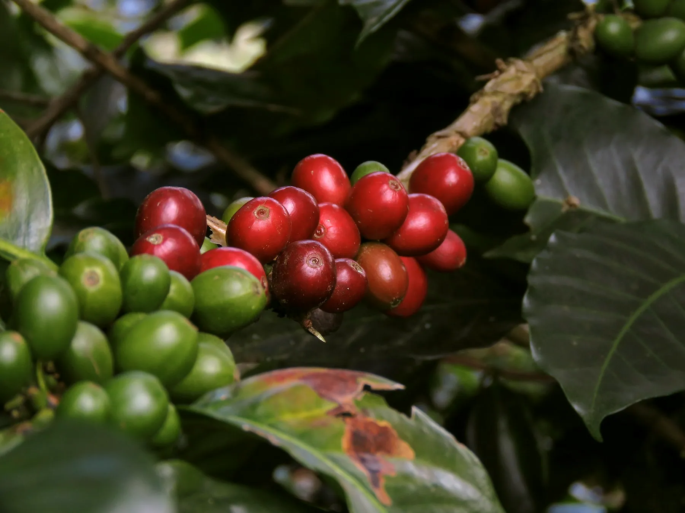
กาแฟสเปเชียลตี้คือเมล็ดที่ผ่านการคัปปิ้งได้คะแนน 80 ขึ้นไปตามมาตรฐาน SCA รู้ที่มาถึงระดับไร่ เก็บเฉพาะผลที่สุกพอดี จึงมีรสชาติเฉพาะตัวที่เล่าเรื่องของแหล่งปลูกได้ในทุกแก้ว
Every cup tells its origin — กาแฟที่เล่าเรื่องได้ในทุกแก้ว

คั่วเองทุกสัปดาห์ที่โรงคั่วของเรา เลือกโปรไฟล์ให้เข้ากับเมล็ดแต่ละล็อต
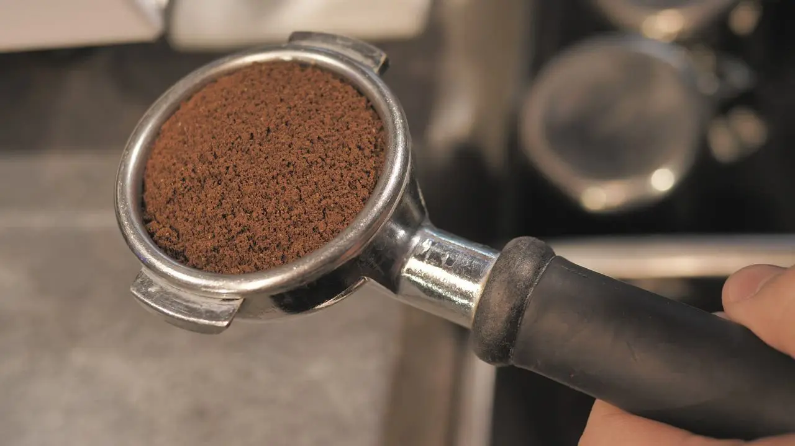
บดสดก่อนชงทุกช็อต ชั่งน้ำหนักและจับเวลาตามสูตรของร้าน
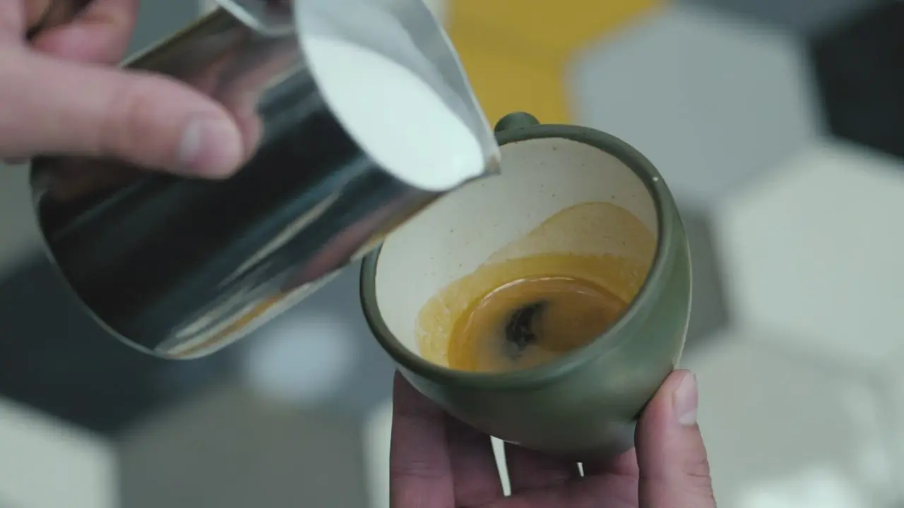
สตีมนมเนื้อเนียน วาดลาเต้อาร์ตทีละแก้วต่อหน้าคุณ
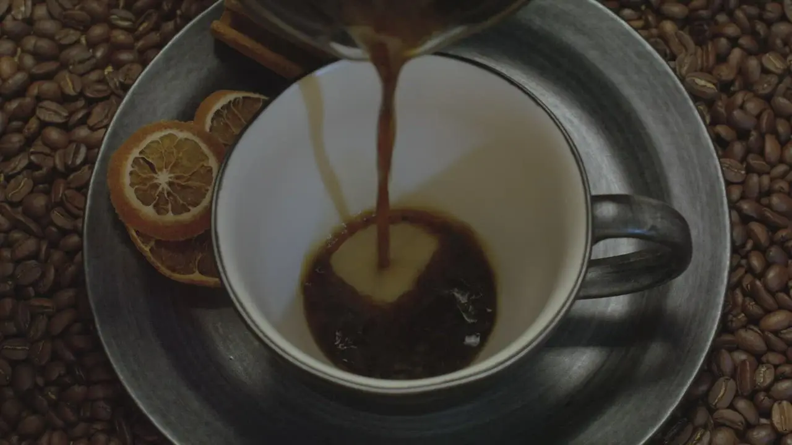
เสิร์ฟพร้อมขนมอบที่จับคู่รสชาติมาแล้วว่าเข้ากัน
ริสเตรตโตร้อนรินบนนมสดเย็นจัด ไหลเป็นลายสวย ดื่มทันที
โคลด์บรูว์บนน้ำส้มคั้นสด ใส่ส้มอบแห้ง หอม สดชื่นรับหน้าร้อน
เมล็ดล็อตใหม่ประจำฤดูกาล หอมดอกมะลิ เบอร์รี่ และชาดำ
ครัวซองต์เนยฝรั่งเศส อบใหม่ออกเตาทุกเช้า 8 โมงตรง
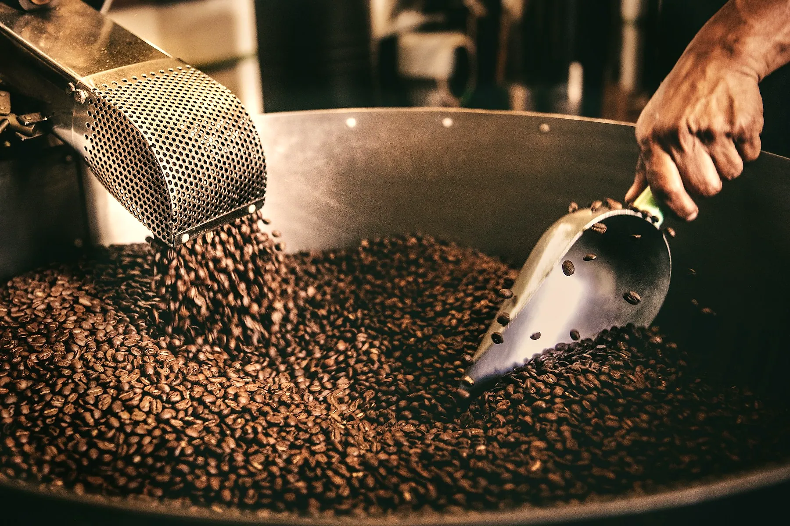
ชิมกาแฟ 5 แหล่งปลูกกับคนคั่วของเรา ทุกวันศุกร์ในเดือนธันวาคม
ดริปมือทีละแก้วด้วยกรวยเซรามิก เลือกเมล็ดตามฤดูกาลได้
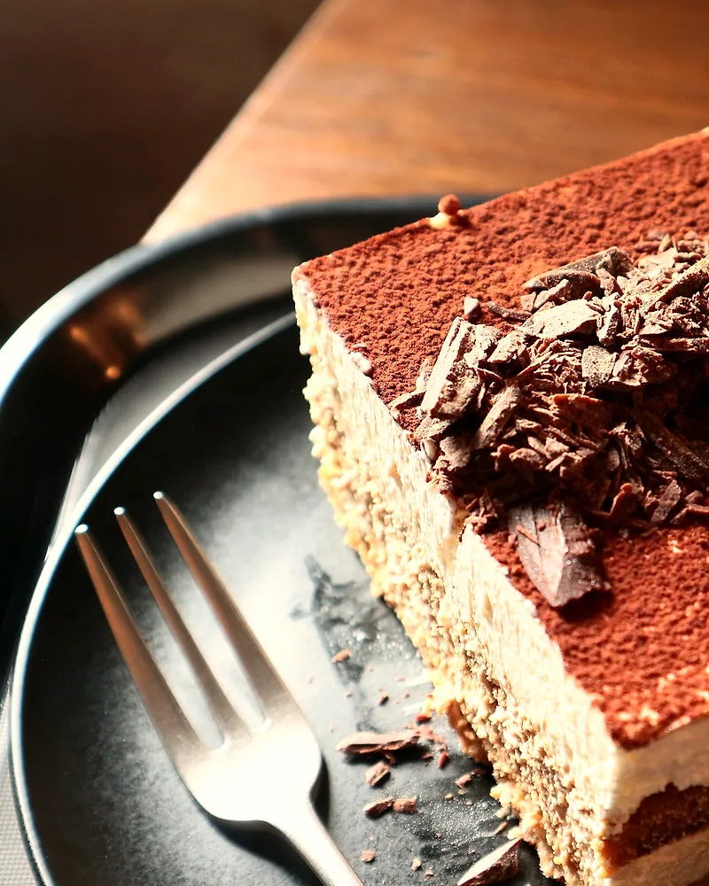
มาสคาร์โปเนเนื้อนุ่ม ชุ่มเอสเพรสโซ โรยโกโก้และช็อกโกแลตขูด
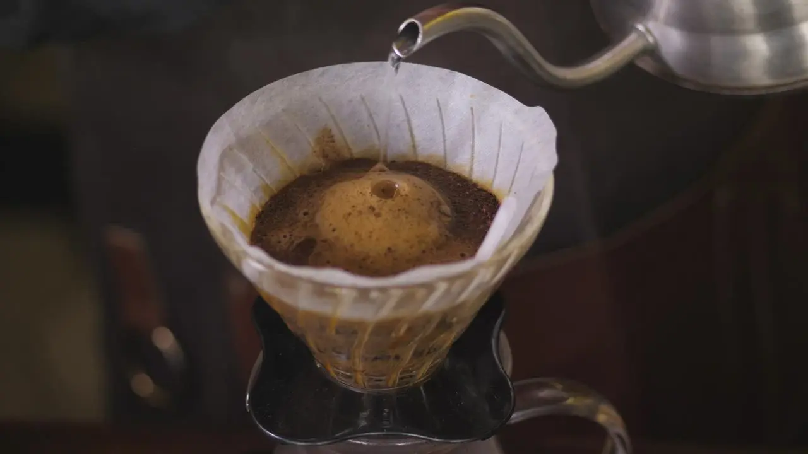
Slow Barคั่วจากโรงคั่วของเราเองทุกสัปดาห์ บดให้ตามอุปกรณ์ชงที่บ้าน ส่งถึงมือภายใน 7 วันหลังคั่ว
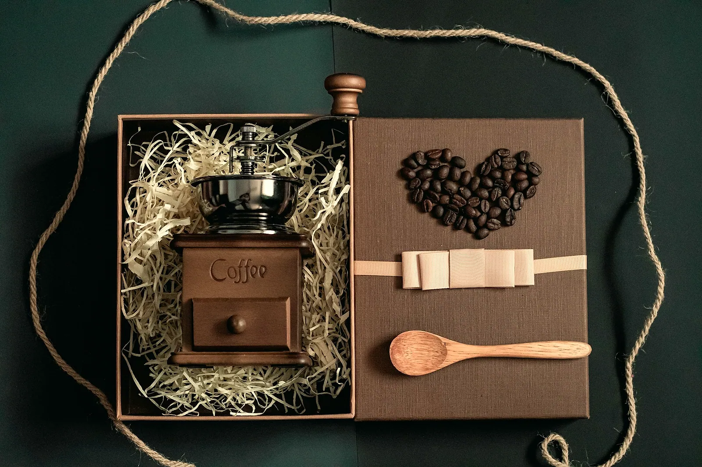
คลาสลาเต้อาร์ต คัปปิ้ง และโฮมบรูว์ สำหรับมือใหม่ถึงบาริสต้า รับจำนวนจำกัดทุกรอบ ทุกเสาร์–อาทิตย์
ดูรายละเอียด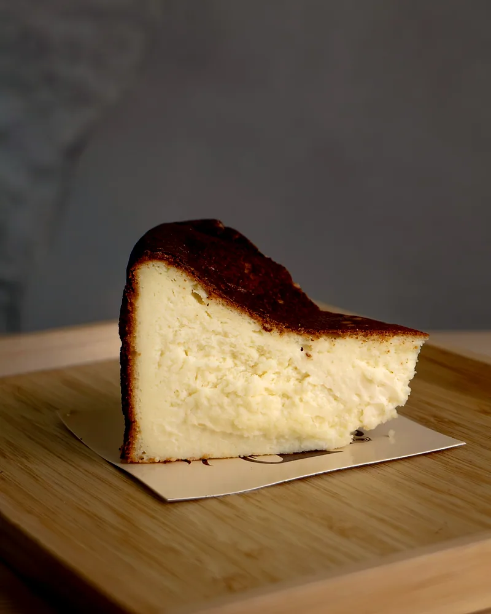
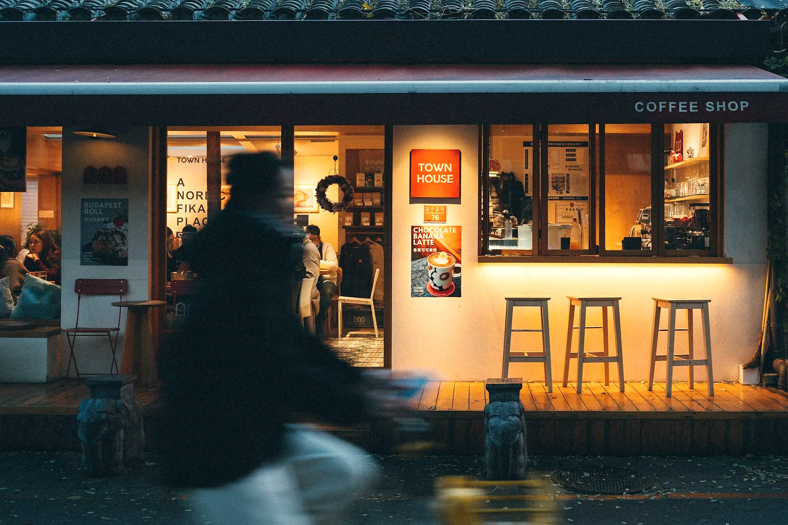
สาขาของเรา